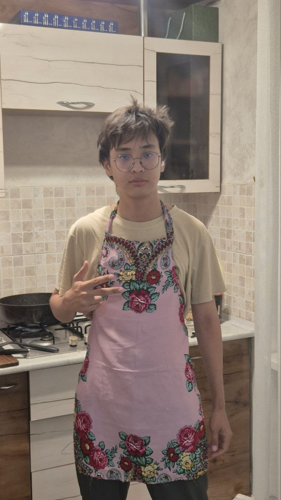

Natural Ingredients
We use real cream, farm-fresh butter, and premium flour—no artificial additives.
We craft comfort, bake with passion, and fill your day with the rich aroma of fresh bread and specialty coffee.
How a small family vision grew into a beloved local spot cherished by hundreds of guests daily.
We use real cream, farm-fresh butter, and premium flour—no artificial additives.
Our bakers start early at 5:00 AM so pastries are hot and fresh when you wake up.
We treat every visitor as a dear friend, creating a cozy and welcoming atmosphere.

Founder & Brand Manager. Leads the vision and creative concept of Bakery-52.
Head Pastry Chef. Crafts signature cake recipes and desserts with passion.
Master Baker. Responsible for flaky croissants and artisan sourdough bread.
Head Barista. Expert in roast profiles, brewing the perfect specialty coffee.